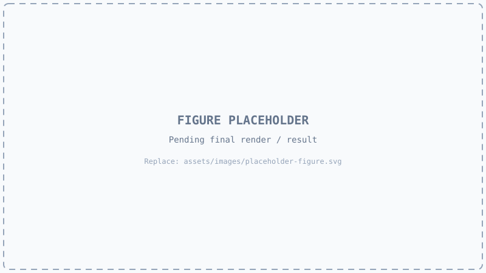

Background and prior work
DepthWizard sits between two research areas — monocular depth estimation and height estimation from remote-sensing imagery. This page sets out what each contributes, where they fall short for our task, and how the design responds.
From monocular depth to remote-sensing height
Three strands of prior work meet in this project: monocular depth estimation, height estimation from aerial imagery, and elevation reference data.
Monocular depth estimation
Estimating depth from one image became practical with deep networks. Fu et al. (2018) framed it as ordinal regression, discretising the depth range and predicting an ordered class per pixel, an influential formulation for dense depth prediction. Ranftl et al. (2021) showed that a Vision Transformer encoder with a convolutional decoder (DPT) gives finer, more globally coherent dense predictions than earlier convolutional designs. Depth Anything V2 (Yang et al., 2024) builds on a DINOv2 encoder and the DPT decoder and is trained at very large scale, which is why it transfers so well to images unlike its training data. It is the backbone used here.
Height from aerial and satellite imagery
A separate line of work predicts height directly from remote-sensing imagery. Mou and Zhu (2018) introduced IM2HEIGHT, a fully residual convolutional-deconvolutional network that regresses a height map from a single aerial image. Ghamisi and Yokoya (2018) generated digital surface models from one image with a conditional GAN. Srivastava et al. (2017) trained a network to estimate height and semantic labels jointly and found that the semantic task improved the height estimate. These works establish that single-image height recovery is learnable, but they predict height inside the domain they were trained on and do not address absolute calibration or confidence.
Reference data and benchmark
The Shuttle Radar Topography Mission (Farr et al., 2007) provides near-global elevation at roughly 30 m spacing. It is far too coarse to resolve buildings but gives a reliable regional baseline, which is exactly what a scale calibration needs. GAMUS (Xiong et al., 2023) supplies paired RGB, height and land-cover labels for fine-tuning and evaluation.

Where DepthWizard sits
Conventional acquisition measures elevation; learned single-image methods infer it. DepthWizard adds two things the learned methods leave out.
| Approach | Input | Output | Absolute scale | Confidence |
|---|---|---|---|---|
| LiDAR, stereo, InSAR (conventional) | Dedicated acquisition; multiple views or active sensor | Measured DSM | Measured directly | From measurement quality |
| IM2HEIGHT | Single aerial image | Height map | Learned implicitly from training data | Not part of the method |
| IMG2DSM | Single image | Simulated DSM | Learned implicitly from training data | Not part of the method |
| DepthWizard | Single image (GeoTIFF or plain) | Relative DSM; calibrated DSM in metres when georeferenced | Explicit per-class calibration against SRTM | Per-pixel map from test-time augmentation |
What earlier approaches left open
Four gaps, each mapped to a specific component of the pipeline.
The ideas the method rests on
Four short arguments; the full mathematics is archived in Documentation.
Why single-image depth is ill-posed
Under perspective projection a scene point at position (X, Y, Z) appears at image position u = f·X/Z, v = f·Y/Z. Scaling the whole scene by any factor s gives (sX, sY, sZ) and lands on exactly the same pixel. The image therefore cannot distinguish a small near scene from a large far one, so absolute scale is undetermined. A learned model resolves the shape using priors about the world; scale needs an external measurement.
Scale-invariant learning
Because absolute scale is not recoverable from the image, training the network against absolute metres would reward guesses. A scale-invariant logarithmic loss compares predictions with targets in log-space and subtracts a term proportional to the squared mean log-difference, so a global multiplicative offset costs nothing. The network is then free to learn structure, and scale is handled later. The formulation is given in Documentation.
Semantic priors for height
Land-cover class carries information about height: buildings and trees stand above ground, roads and water lie on it. Srivastava et al. (2017) showed that learning semantics and height together helps. We use the idea differently, at calibration time: the relationship between predicted relative height and reference elevation is fitted separately for each class, so a systematic bias affecting only trees, for example, does not distort buildings.
Test-time augmentation as an uncertainty estimate
If a prediction is well determined by the image, small changes to the input — a flip, a slight brightening — should change it very little once mapped back. Where the model is unsure, such changes move the answer. The variance across a fixed set of eight perturbed passes measures that sensitivity. It captures how stable the model’s output is, which is a useful proxy for reliability rather than a calibrated probability.
Bibliography
Each entry was checked against its original publication record. The guided filter (9) is the edge-preserving filter used in Stages 1 and 3.
| # | Reference |
|---|---|
| 1 | Fu, H., Gong, M., Wang, C., Batmanghelich, K., & Tao, D. (2018). Deep Ordinal Regression Network for Monocular Depth Estimation. IEEE CVPR, pp. 2002–2011. IEEE Xplore |
| 2 | Ranftl, R., Bochkovskiy, A., & Koltun, V. (2021). Vision Transformers for Dense Prediction. IEEE/CVF ICCV, pp. 12179–12188. |
| 3 | Yang, L., Kang, B., Huang, Z., Zhao, Z., Xu, X., Feng, J., & Zhao, H. (2024). Depth Anything V2. NeurIPS 2024. arXiv:2406.09414. |
| 4 | Mou, L., & Zhu, X. X. (2018). IM2HEIGHT: Height Estimation from Single Monocular Imagery via Fully Residual Convolutional-Deconvolutional Network. arXiv:1802.10249. |
| 5 | Ghamisi, P., & Yokoya, N. (2018). IMG2DSM: Height Simulation from Single Imagery Using Conditional Generative Adversarial Net. IEEE Geoscience and Remote Sensing Letters, 15(5), 794–798. IEEE Xplore |
| 6 | Srivastava, S., Volpi, M., & Tuia, D. (2017). Joint Height Estimation and Semantic Labeling of Monocular Aerial Images with CNNs. IEEE IGARSS, pp. 5173–5176. IEEE Xplore |
| 7 | Farr, T. G., Rosen, P. A., Caro, E., et al. (2007). The Shuttle Radar Topography Mission. Reviews of Geophysics, 45(2), RG2004. |
| 8 | Xiong, Z., Chen, S., Wang, Y., Mou, L., & Zhu, X. X. (2023). GAMUS: A Geometry-Aware Multi-modal Semantic Segmentation Benchmark for Remote Sensing Data. arXiv:2305.14914. |
| 9 | He, K., Sun, J., & Tang, X. (2010). Guided Image Filtering. ECCV 2010. |